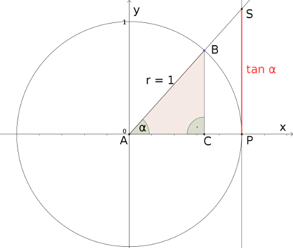

3 - 3.1
1.1.3 Impressum
Sämtliche Inhalte und Materialien dieses Kurses werden unter der offenen Lizenz CC BY-SA 3.0 veröffentlicht und können (bei Nennung des Urhebers) weiterverwendet oder angepasst werden. Autoren- und Urheberrechte des MINT-Kollegs Baden-Württemberg und der VEMINT-Standorte bleiben davon unberührt.
Bei der Weiterverwendung von Kursmaterialien sind anzugeben: Der Name des Urhebers (das VE&MINT-Projekt), die verwendete Lizenz samt einem URI/URL, sowie ein Hinweis falls die Inhalte verändert wurden. Hier ein Beispiel:

Unter Verwendung von Materialien des VE&MINT-Projekts erstellt von H. Mustermann, Lizenz CC BY-SA 3.0 de.
Unter Verwendung von Materialien des VE&MINT-Projekts erstellt von H. Mustermann, Lizenz CC BY-SA 3.0 de.
In den Onlinemodulen werden folgende unter einer freien Lizenz stehenden Materialien eingesetzt:
- Icons, die ausgehend von Material aus der Open Icon Library erstellt bzw. angepasst wurden.
- Grafiken, die mit GIMP erstellt wurden.
- Funktionsplots, die mit PGF/TikZ generiert oder aus einem CAS exportiert wurden.
- Videos, die am Zentrum für mediales Lernen am KIT erstellt wurden.
Dieser Onlinekurs wurde im Rahmen des Projekts VE&MINT von den am Projekt beteiligten Partneruniversitäten erstellt und wird bundesweit durch das Karlsruher Institut für Technologie.
Verantwortlich für den Inhalt: MINT-Kolleg Baden-Württemberg, Dr. Claudia Goll.
Beachten Sie die Hinweise zum Haftungsauschluss.
Einzelnachweis der Medieninhalte in diesem Kurs:
| Unterabschnitt 8.2.2 | CC BY-SA 3.0 | MINT-Kolleg Baden-Württemberg | Grafikdatei erzeugt aus tikz-Code | TikZ-Quelltext in der Datei vbkm08.tex |
| Unterabschnitt 8.2.4 | CC BY-SA 3.0 | MINT-Kolleg Baden-Württemberg | Grafikdatei erzeugt aus tikz-Code | TikZ-Quelltext in der Datei vbkm08.tex |
| Unterabschnitt 8.2.4 | CC BY-SA 3.0 | MINT-Kolleg Baden-Württemberg | Grafikdatei erzeugt aus tikz-Code | TikZ-Quelltext in der Datei vbkm08.tex |
| Aufgabe 8.2.16 | CC BY-SA 3.0 | MINT-Kolleg Baden-Württemberg | Grafikdatei erzeugt aus tikz-Code | TikZ-Quelltext in der Datei vbkm08.tex |
| Aufgabe 8.2.16 | CC BY-SA 3.0 | MINT-Kolleg Baden-Württemberg | Grafikdatei erzeugt aus tikz-Code | TikZ-Quelltext in der Datei vbkm08.tex |
| Unterabschnitt 8.3.11 | CC BY-SA 3.0 | MINT-Kolleg Baden-Württemberg | Grafikdatei erzeugt aus tikz-Code | TikZ-Quelltext in der Datei vbkm08.tex |
| Beispiel 8.3.2 | CC BY-SA 3.0 | MINT-Kolleg Baden-Württemberg | Grafikdatei erzeugt aus tikz-Code | TikZ-Quelltext in der Datei vbkm08.tex |
| Aufgabe 8.3.6 | CC BY-SA 3.0 | MINT-Kolleg Baden-Württemberg | Grafikdatei erzeugt aus tikz-Code | TikZ-Quelltext in der Datei vbkm08.tex |
| Unterabschnitt 10.1.1 | CC BY-SA 3.0 | MINT-Kolleg Baden-Württemberg | Grafikdatei erzeugt aus tikz-Code | TikZ-Quelltext in der Datei vbkm10.tex |
| Unterabschnitt 10.1.3 | CC BY-SA 3.0 | MINT-Kolleg Baden-Württemberg | Grafikdatei erzeugt aus tikz-Code | TikZ-Quelltext in der Datei vbkm10.tex |
| Aufgabe 10.1.1 | CC BY-SA 3.0 | MINT-Kolleg Baden-Württemberg | Grafikdatei erzeugt aus tikz-Code | TikZ-Quelltext in der Datei vbkm10.tex |
| Unterabschnitt 10.1.3 | CC BY-SA 3.0 | MINT-Kolleg Baden-Württemberg | Grafikdatei erzeugt aus tikz-Code | TikZ-Quelltext in der Datei vbkm10.tex |
| Unterabschnitt 10.1.3 | CC BY-SA 3.0 | MINT-Kolleg Baden-Württemberg | Grafikdatei erzeugt aus tikz-Code | TikZ-Quelltext in der Datei vbkm10.tex |
| Aufgabe 10.1.3 | CC BY-SA 3.0 | MINT-Kolleg Baden-Württemberg | Grafikdatei erzeugt aus tikz-Code | TikZ-Quelltext in der Datei vbkm10.tex |
| Infobox 10.1.11 | CC BY-SA 3.0 | MINT-Kolleg Baden-Württemberg | Grafikdatei erzeugt aus tikz-Code | TikZ-Quelltext in der Datei vbkm10.tex |
| Infobox 10.1.13 | CC BY-SA 3.0 | MINT-Kolleg Baden-Württemberg | Grafikdatei erzeugt aus tikz-Code | TikZ-Quelltext in der Datei vbkm10.tex |
| Aufgabe 10.1.7 | CC BY-SA 3.0 | MINT-Kolleg Baden-Württemberg | Grafikdatei erzeugt aus tikz-Code | TikZ-Quelltext in der Datei vbkm10.tex |
| Infobox 10.1.15 | CC BY-SA 3.0 | MINT-Kolleg Baden-Württemberg | Grafikdatei erzeugt aus tikz-Code | TikZ-Quelltext in der Datei vbkm10.tex |
| Infobox 10.1.15 | CC BY-SA 3.0 | MINT-Kolleg Baden-Württemberg | Grafikdatei erzeugt aus tikz-Code | TikZ-Quelltext in der Datei vbkm10.tex |
| Beispiel 10.1.10 | CC BY-SA 3.0 | MINT-Kolleg Baden-Württemberg | Grafikdatei erzeugt aus tikz-Code | TikZ-Quelltext in der Datei vbkm10.tex |
| Beispiel 10.1.10 | CC BY-SA 3.0 | MINT-Kolleg Baden-Württemberg | Grafikdatei erzeugt aus tikz-Code | TikZ-Quelltext in der Datei vbkm10.tex |
| Infobox 10.1.18 | CC BY-SA 3.0 | MINT-Kolleg Baden-Württemberg | Grafikdatei erzeugt aus tikz-Code | TikZ-Quelltext in der Datei vbkm10.tex |
| Beispiel 10.1.13 | CC BY-SA 3.0 | MINT-Kolleg Baden-Württemberg | Grafikdatei erzeugt aus tikz-Code | TikZ-Quelltext in der Datei vbkm10.tex |
| Infobox 10.1.20 | CC BY-SA 3.0 | MINT-Kolleg Baden-Württemberg | Grafikdatei erzeugt aus tikz-Code | TikZ-Quelltext in der Datei vbkm10.tex |
| Beispiel 10.1.16 | CC BY-SA 3.0 | MINT-Kolleg Baden-Württemberg | Grafikdatei erzeugt aus tikz-Code | TikZ-Quelltext in der Datei vbkm10.tex |
| Beispiel 10.1.16 | CC BY-SA 3.0 | MINT-Kolleg Baden-Württemberg | Grafikdatei erzeugt aus tikz-Code | TikZ-Quelltext in der Datei vbkm10.tex |
| Aufgabe 10.1.17 | CC BY-SA 3.0 | MINT-Kolleg Baden-Württemberg | Grafikdatei erzeugt aus tikz-Code | TikZ-Quelltext in der Datei vbkm10.tex |
| Infobox 10.1.20 | CC BY-SA 3.0 | MINT-Kolleg Baden-Württemberg | Grafikdatei erzeugt aus tikz-Code | TikZ-Quelltext in der Datei vbkm10.tex |
| Infobox 10.1.20 | CC BY-SA 3.0 | MINT-Kolleg Baden-Württemberg | Grafikdatei erzeugt aus tikz-Code | TikZ-Quelltext in der Datei vbkm10.tex |
| Infobox 10.2.1 | CC BY-SA 3.0 | MINT-Kolleg Baden-Württemberg | Grafikdatei erzeugt aus tikz-Code | TikZ-Quelltext in der Datei vbkm10.tex |
| Infobox 10.2.1 | CC BY-SA 3.0 | MINT-Kolleg Baden-Württemberg | Grafikdatei erzeugt aus tikz-Code | TikZ-Quelltext in der Datei vbkm10.tex |
| Unterabschnitt 10.2.2 | CC BY-SA 3.0 | MINT-Kolleg Baden-Württemberg | Grafikdatei erzeugt aus tikz-Code | TikZ-Quelltext in der Datei vbkm10.tex |
| Unterabschnitt 10.2.2 | CC BY-SA 3.0 | MINT-Kolleg Baden-Württemberg | Grafikdatei erzeugt aus tikz-Code | TikZ-Quelltext in der Datei vbkm10.tex |
| Infobox 10.2.31 | CC BY-SA 3.0 | MINT-Kolleg Baden-Württemberg | Grafikdatei erzeugt aus tikz-Code | TikZ-Quelltext in der Datei vbkm10.tex |
| Infobox 10.2.31 | CC BY-SA 3.0 | MINT-Kolleg Baden-Württemberg | Grafikdatei erzeugt aus tikz-Code | TikZ-Quelltext in der Datei vbkm10.tex |
| Beispiel 10.2.3 | CC BY-SA 3.0 | MINT-Kolleg Baden-Württemberg | Grafikdatei erzeugt aus tikz-Code | TikZ-Quelltext in der Datei vbkm10.tex |
| Infobox 10.2.35 | CC BY-SA 3.0 | MINT-Kolleg Baden-Württemberg | Grafikdatei erzeugt aus tikz-Code | TikZ-Quelltext in der Datei vbkm10.tex |
| Aufgabe 10.3.1 | CC BY-SA 3.0 | MINT-Kolleg Baden-Württemberg | Grafikdatei erzeugt aus tikz-Code | TikZ-Quelltext in der Datei vbkm10.tex |
| Beispiel 3.1.2 | CC BY-SA 3.0 | MINT-Kolleg Baden-Württemberg | Grafikdatei erzeugt aus tikz-Code | TikZ-Quelltext in der Datei vbkm03.tex |
| Beispiel 3.2.2 | CC BY-SA 3.0 | MINT-Kolleg Baden-Württemberg | Grafikdatei erzeugt aus tikz-Code | TikZ-Quelltext in der Datei vbkm03.tex |
| Aufgabe 3.2.4 | CC BY-SA 3.0 | MINT-Kolleg Baden-Württemberg | Grafikdatei erzeugt aus tikz-Code | TikZ-Quelltext in der Datei vbkm03.tex |
| Beispiel 3.3.2 | CC BY-SA 3.0 | MINT-Kolleg Baden-Württemberg | Grafikdatei erzeugt aus tikz-Code | TikZ-Quelltext in der Datei vbkm03.tex |
| Beispiel 3.3.6 | CC BY-SA 3.0 | MINT-Kolleg Baden-Württemberg | Grafikdatei erzeugt aus tikz-Code | TikZ-Quelltext in der Datei vbkm03.tex |
| Beispiel 3.3.11 | CC BY-SA 3.0 | MINT-Kolleg Baden-Württemberg | Grafikdatei erzeugt aus tikz-Code | TikZ-Quelltext in der Datei vbkm03.tex |
| Aufgabe 3.4.2 | CC BY-SA 3.0 | MINT-Kolleg Baden-Württemberg | Grafikdatei erzeugt aus tikz-Code | TikZ-Quelltext in der Datei vbkm03.tex |
| Aufgabe 1.2.15 | CC BY-SA 3.0 | MINT-Kolleg Baden-Württemberg | Grafikdatei erzeugt aus tikz-Code | TikZ-Quelltext in der Datei vbkmtestpaketkit1.tex |
| Aufgabe 1.2.15 | CC BY-SA 3.0 | MINT-Kolleg Baden-Württemberg | Grafikdatei erzeugt aus tikz-Code | TikZ-Quelltext in der Datei vbkmtestpaketkit1.tex |
| Aufgabe 1.2.15 | CC BY-SA 3.0 | MINT-Kolleg Baden-Württemberg | Grafikdatei erzeugt aus tikz-Code | TikZ-Quelltext in der Datei vbkmtestpaketkit1.tex |
| Aufgabe 1.2.15 | CC BY-SA 3.0 | MINT-Kolleg Baden-Württemberg | Grafikdatei erzeugt aus tikz-Code | TikZ-Quelltext in der Datei vbkmtestpaketkit1.tex |
| Aufgabe 1.2.15 | CC BY-SA 3.0 | MINT-Kolleg Baden-Württemberg | Grafikdatei erzeugt aus tikz-Code | TikZ-Quelltext in der Datei vbkmtestpaketkit1.tex |
| Aufgabe 1.2.19 | CC BY-SA 3.0 | MINT-Kolleg Baden-Württemberg | Grafikdatei erzeugt aus tikz-Code | TikZ-Quelltext in der Datei vbkmtestpaketkit1.tex |
| Unterabschnitt 5.1.1 | CC BY-SA 3.0 | MINT-Kolleg Baden-Württemberg | Grafikdatei erzeugt aus tikz-Code | TikZ-Quelltext in der Datei vbkm05.tex |
| Unterabschnitt 5.1.2 | CC BY-SA 3.0 | MINT-Kolleg Baden-Württemberg | Grafikdatei erzeugt aus tikz-Code | TikZ-Quelltext in der Datei vbkm05.tex |
| Infobox 5.1.0 | CC BY-SA 3.0 | MINT-Kolleg Baden-Württemberg | Grafikdatei erzeugt aus tikz-Code | TikZ-Quelltext in der Datei vbkm05.tex |
| Infobox 5.1.3 | CC BY-SA 3.0 | MINT-Kolleg Baden-Württemberg | Grafikdatei erzeugt aus tikz-Code | TikZ-Quelltext in der Datei vbkm05.tex |
| Infobox 5.1.2 | CC BY-SA 3.0 | MINT-Kolleg Baden-Württemberg | Grafikdatei erzeugt aus tikz-Code | TikZ-Quelltext in der Datei vbkm05.tex |
| Infobox 5.1.8 | CC BY-SA 3.0 | MINT-Kolleg Baden-Württemberg | Grafikdatei erzeugt aus tikz-Code | TikZ-Quelltext in der Datei vbkm05.tex |
| Unterabschnitt 5.1.3 | CC BY-SA 3.0 | MINT-Kolleg Baden-Württemberg | Grafikdatei erzeugt aus tikz-Code | TikZ-Quelltext in der Datei vbkm05.tex |
| Infobox 5.1.4 | CC BY-SA 3.0 | MINT-Kolleg Baden-Württemberg | Grafikdatei erzeugt aus tikz-Code | TikZ-Quelltext in der Datei vbkm05.tex |
| Beispiel 5.1.5 | CC BY-SA 3.0 | MINT-Kolleg Baden-Württemberg | Grafikdatei erzeugt aus tikz-Code | TikZ-Quelltext in der Datei vbkm05.tex |
| Aufgabe 5.1.6 | CC BY-SA 3.0 | MINT-Kolleg Baden-Württemberg | Grafikdatei erzeugt aus tikz-Code | TikZ-Quelltext in der Datei vbkm05.tex |
| Unterabschnitt 5.2.1 | CC BY-SA 3.0 | MINT-Kolleg Baden-Württemberg | Grafikdatei erzeugt aus tikz-Code | TikZ-Quelltext in der Datei vbkm05.tex |
| Unterabschnitt 5.2.9 | CC BY-SA 3.0 | MINT-Kolleg Baden-Württemberg | Grafikdatei erzeugt aus tikz-Code | TikZ-Quelltext in der Datei vbkm05.tex |
| Unterabschnitt 5.2.9 | CC BY-SA 3.0 | MINT-Kolleg Baden-Württemberg | Grafikdatei erzeugt aus tikz-Code | TikZ-Quelltext in der Datei vbkm05.tex |
| Infobox 5.2.1 | CC BY-SA 3.0 | MINT-Kolleg Baden-Württemberg | Grafikdatei erzeugt aus tikz-Code | TikZ-Quelltext in der Datei vbkm05.tex |
| Infobox 5.2.4 | CC BY-SA 3.0 | MINT-Kolleg Baden-Württemberg | Grafikdatei erzeugt aus tikz-Code | TikZ-Quelltext in der Datei vbkm05.tex |
| Infobox 5.2.4 | CC BY-SA 3.0 | MINT-Kolleg Baden-Württemberg | Grafikdatei erzeugt aus tikz-Code | TikZ-Quelltext in der Datei vbkm05.tex |
| Aufgabe 5.2.5 | CC BY-SA 3.0 | MINT-Kolleg Baden-Württemberg | Grafikdatei erzeugt aus tikz-Code | TikZ-Quelltext in der Datei vbkm05.tex |
| Unterabschnitt 5.2.3 | CC BY-SA 3.0 | MINT-Kolleg Baden-Württemberg | Grafikdatei erzeugt aus tikz-Code | TikZ-Quelltext in der Datei vbkm05.tex |
| Infobox 5.2.7 | CC BY-SA 3.0 | MINT-Kolleg Baden-Württemberg | Grafikdatei erzeugt aus tikz-Code | TikZ-Quelltext in der Datei vbkm05.tex |
| Unterabschnitt 5.3.1 | CC BY-SA 3.0 | MINT-Kolleg Baden-Württemberg | Grafikdatei erzeugt aus tikz-Code | TikZ-Quelltext in der Datei vbkm05.tex |
| Infobox 5.3.31 | CC BY-SA 3.0 | MINT-Kolleg Baden-Württemberg | Grafikdatei erzeugt aus tikz-Code | TikZ-Quelltext in der Datei vbkm05.tex |
| Infobox 5.3.2 | CC BY-SA 3.0 | MINT-Kolleg Baden-Württemberg | Grafikdatei erzeugt aus tikz-Code | TikZ-Quelltext in der Datei vbkm05.tex |
| Infobox 5.3.3 | CC BY-SA 3.0 | MINT-Kolleg Baden-Württemberg | Grafikdatei erzeugt aus tikz-Code | TikZ-Quelltext in der Datei vbkm05.tex |
| Infobox 5.3.6 | CC BY-SA 3.0 | MINT-Kolleg Baden-Württemberg | Grafikdatei erzeugt aus tikz-Code | TikZ-Quelltext in der Datei vbkm05.tex |
| Beispiel 5.3.7 | CC BY-SA 3.0 | MINT-Kolleg Baden-Württemberg | Grafikdatei erzeugt aus tikz-Code | TikZ-Quelltext in der Datei vbkm05.tex |
| Aufgabe 5.3.8 | CC BY-SA 3.0 | MINT-Kolleg Baden-Württemberg | Grafikdatei erzeugt aus tikz-Code | TikZ-Quelltext in der Datei vbkm05.tex |
| Beispiel 5.3.14 | CC BY-SA 3.0 | MINT-Kolleg Baden-Württemberg | Grafikdatei erzeugt aus tikz-Code | TikZ-Quelltext in der Datei vbkm05.tex |
| Aufgabe 5.3.15 | CC BY-SA 3.0 | MINT-Kolleg Baden-Württemberg | Grafikdatei erzeugt aus tikz-Code | TikZ-Quelltext in der Datei vbkm05.tex |
| Beispiel 5.3.16 | CC BY-SA 3.0 | MINT-Kolleg Baden-Württemberg | Grafikdatei erzeugt aus tikz-Code | TikZ-Quelltext in der Datei vbkm05.tex |
| Beispiel 5.3.16 | CC BY-SA 3.0 | MINT-Kolleg Baden-Württemberg | Grafikdatei erzeugt aus tikz-Code | TikZ-Quelltext in der Datei vbkm05.tex |
| Infobox 5.3.17 | CC BY-SA 3.0 | MINT-Kolleg Baden-Württemberg | Grafikdatei erzeugt aus tikz-Code | TikZ-Quelltext in der Datei vbkm05.tex |
| Aufgabe 5.3.18 | CC BY-SA 3.0 | MINT-Kolleg Baden-Württemberg | Grafikdatei erzeugt aus tikz-Code | TikZ-Quelltext in der Datei vbkm05.tex |
| Aufgabe 5.3.18 | CC BY-SA 3.0 | MINT-Kolleg Baden-Württemberg | Grafikdatei erzeugt aus tikz-Code | TikZ-Quelltext in der Datei vbkm05.tex |
| Aufgabe 5.3.19 | CC BY-SA 3.0 | MINT-Kolleg Baden-Württemberg | Grafikdatei erzeugt aus tikz-Code | TikZ-Quelltext in der Datei vbkm05.tex |
| Infobox 5.4.2 | CC BY-SA 3.0 | MINT-Kolleg Baden-Württemberg | Grafikdatei erzeugt aus tikz-Code | TikZ-Quelltext in der Datei vbkm05.tex |
| Unterabschnitt 5.4.3 | CC BY-SA 3.0 | MINT-Kolleg Baden-Württemberg | Grafikdatei erzeugt aus tikz-Code | TikZ-Quelltext in der Datei vbkm05.tex |
| Infobox 5.4.8 | CC BY-SA 3.0 | MINT-Kolleg Baden-Württemberg | Grafikdatei erzeugt aus tikz-Code | TikZ-Quelltext in der Datei vbkm05.tex |
| Infobox 5.4.8 | CC BY-SA 3.0 | MINT-Kolleg Baden-Württemberg | Grafikdatei erzeugt aus tikz-Code | TikZ-Quelltext in der Datei vbkm05.tex |
| Infobox 5.4.8 | CC BY-SA 3.0 | MINT-Kolleg Baden-Württemberg | Grafikdatei erzeugt aus tikz-Code | TikZ-Quelltext in der Datei vbkm05.tex |
| Beispiel 5.4.10 | CC BY-SA 3.0 | MINT-Kolleg Baden-Württemberg | Grafikdatei erzeugt aus tikz-Code | TikZ-Quelltext in der Datei vbkm05.tex |
| Aufgabe 5.4.11 | CC BY-SA 3.0 | MINT-Kolleg Baden-Württemberg | Grafikdatei erzeugt aus tikz-Code | TikZ-Quelltext in der Datei vbkm05.tex |
| Beispiel 5.4.12 | CC BY-SA 3.0 | MINT-Kolleg Baden-Württemberg | Grafikdatei erzeugt aus tikz-Code | TikZ-Quelltext in der Datei vbkm05.tex |
| Aufgabe 5.4.13 | CC BY-SA 3.0 | MINT-Kolleg Baden-Württemberg | Grafikdatei erzeugt aus tikz-Code | TikZ-Quelltext in der Datei vbkm05.tex |
| Aufgabe 5.4.13 | CC BY-SA 3.0 | MINT-Kolleg Baden-Württemberg | Grafikdatei erzeugt aus tikz-Code | TikZ-Quelltext in der Datei vbkm05.tex |
| Aufgabe 5.4.16 | CC BY-SA 3.0 | MINT-Kolleg Baden-Württemberg | Grafikdatei erzeugt aus tikz-Code | TikZ-Quelltext in der Datei vbkm05.tex |
| Infobox 5.5.67 | CC BY-SA 3.0 | MINT-Kolleg Baden-Württemberg | Grafikdatei erzeugt aus tikz-Code | TikZ-Quelltext in der Datei vbkm05.tex |
| Infobox 5.5.68 | CC BY-SA 3.0 | MINT-Kolleg Baden-Württemberg | Grafikdatei erzeugt aus tikz-Code | TikZ-Quelltext in der Datei vbkm05.tex |
| Infobox 5.5.4 | CC BY-SA 3.0 | MINT-Kolleg Baden-Württemberg | Grafikdatei erzeugt aus tikz-Code | TikZ-Quelltext in der Datei vbkm05.tex |
| Infobox 5.5.5 | CC BY-SA 3.0 | MINT-Kolleg Baden-Württemberg | Grafikdatei erzeugt aus tikz-Code | TikZ-Quelltext in der Datei vbkm05.tex |
| Infobox 5.5.7 | CC BY-SA 3.0 | MINT-Kolleg Baden-Württemberg | Grafikdatei erzeugt aus tikz-Code | TikZ-Quelltext in der Datei vbkm05.tex |
| Infobox 5.6.1 | CC BY-SA 3.0 | MINT-Kolleg Baden-Württemberg | Grafikdatei erzeugt aus tikz-Code | TikZ-Quelltext in der Datei vbkm05.tex |
| Aufgabe 5.6.3 | CC BY-SA 3.0 | MINT-Kolleg Baden-Württemberg | Grafikdatei erzeugt aus tikz-Code | TikZ-Quelltext in der Datei vbkm05.tex |
| Beispiel 5.6.4 | CC BY-SA 3.0 | MINT-Kolleg Baden-Württemberg | Grafikdatei erzeugt aus tikz-Code | TikZ-Quelltext in der Datei vbkm05.tex |
| Beispiel 5.6.5 | CC BY-SA 3.0 | MINT-Kolleg Baden-Württemberg | Grafikdatei erzeugt aus tikz-Code | TikZ-Quelltext in der Datei vbkm05.tex |
| Unterabschnitt 5.6.3 | CC BY-SA 3.0 | MINT-Kolleg Baden-Württemberg | Grafikdatei erzeugt aus tikz-Code | TikZ-Quelltext in der Datei vbkm05.tex |
| Unterabschnitt 5.6.3 | CC BY-SA 3.0 | MINT-Kolleg Baden-Württemberg | Grafikdatei erzeugt aus tikz-Code | TikZ-Quelltext in der Datei vbkm05.tex |
| Aufgabe 5.6.9 | CC BY-SA 3.0 | MINT-Kolleg Baden-Württemberg | Grafikdatei erzeugt aus tikz-Code | TikZ-Quelltext in der Datei vbkm05.tex |
| Aufgabe 5.7.1 | CC BY-SA 3.0 | MINT-Kolleg Baden-Württemberg | Grafikdatei erzeugt aus tikz-Code | TikZ-Quelltext in der Datei vbkm05.tex |
| Beispiel 4.2.2 | CC BY-SA 3.0 | MINT-Kolleg Baden-Württemberg | Grafikdatei erzeugt aus tikz-Code | TikZ-Quelltext in der Datei vbkm04.tex |
| Beispiel 4.2.4 | CC BY-SA 3.0 | MINT-Kolleg Baden-Württemberg | Grafikdatei erzeugt aus tikz-Code | TikZ-Quelltext in der Datei vbkm04.tex |
| Beispiel 4.2.4 | CC BY-SA 3.0 | MINT-Kolleg Baden-Württemberg | Grafikdatei erzeugt aus tikz-Code | TikZ-Quelltext in der Datei vbkm04.tex |
| Beispiel 4.2.5 | CC BY-SA 3.0 | MINT-Kolleg Baden-Württemberg | Grafikdatei erzeugt aus tikz-Code | TikZ-Quelltext in der Datei vbkm04.tex |
| Aufgabe 4.2.14 | CC BY-SA 3.0 | MINT-Kolleg Baden-Württemberg | Grafikdatei erzeugt aus tikz-Code | TikZ-Quelltext in der Datei vbkm04.tex |
| Aufgabe 4.2.16 | CC BY-SA 3.0 | MINT-Kolleg Baden-Württemberg | Grafikdatei erzeugt aus tikz-Code | TikZ-Quelltext in der Datei vbkm04.tex |
| Beispiel 4.3.15 | CC BY-SA 3.0 | MINT-Kolleg Baden-Württemberg | Grafikdatei erzeugt aus tikz-Code | TikZ-Quelltext in der Datei vbkm04.tex |
| Beispiel 4.3.15 | CC BY-SA 3.0 | MINT-Kolleg Baden-Württemberg | Grafikdatei erzeugt aus tikz-Code | TikZ-Quelltext in der Datei vbkm04.tex |
| Beispiel 4.3.15 | CC BY-SA 3.0 | MINT-Kolleg Baden-Württemberg | Grafikdatei erzeugt aus tikz-Code | TikZ-Quelltext in der Datei vbkm04.tex |
| Aufgabe 4.3.11 | CC BY-SA 3.0 | MINT-Kolleg Baden-Württemberg | Grafikdatei erzeugt aus tikz-Code | TikZ-Quelltext in der Datei vbkm04.tex |
| Aufgabe 4.4.3 | CC BY-SA 3.0 | MINT-Kolleg Baden-Württemberg | Grafikdatei erzeugt aus tikz-Code | TikZ-Quelltext in der Datei vbkm04.tex |
| Aufgabe 4.5.4 | CC BY-SA 3.0 | MINT-Kolleg Baden-Württemberg | Grafikdatei erzeugt aus tikz-Code | TikZ-Quelltext in der Datei vbkm04.tex |
| Beispiel 6.1.1 | CC BY-SA 3.0 | MINT-Kolleg Baden-Württemberg | Grafikdatei erzeugt aus tikz-Code | TikZ-Quelltext in der Datei vbkm06.tex |
| Aufgabe 6.1.2 | CC BY-SA 3.0 | MINT-Kolleg Baden-Württemberg | Grafikdatei erzeugt aus tikz-Code | TikZ-Quelltext in der Datei vbkm06.tex |
| Aufgabe 6.1.2 | CC BY-SA 3.0 | MINT-Kolleg Baden-Württemberg | Grafikdatei erzeugt aus tikz-Code | TikZ-Quelltext in der Datei vbkm06.tex |
| Unterabschnitt 6.1.2 | CC BY-SA 3.0 | MINT-Kolleg Baden-Württemberg | Grafikdatei erzeugt aus tikz-Code | TikZ-Quelltext in der Datei vbkm06.tex |
| Unterabschnitt 6.1.2 | CC BY-SA 3.0 | MINT-Kolleg Baden-Württemberg | Grafikdatei erzeugt aus tikz-Code | TikZ-Quelltext in der Datei vbkm06.tex |
| Unterabschnitt 6.1.4 | CC BY-SA 3.0 | MINT-Kolleg Baden-Württemberg | Grafikdatei erzeugt aus tikz-Code | TikZ-Quelltext in der Datei vbkm06.tex |
| Unterabschnitt 6.1.4 | CC BY-SA 3.0 | MINT-Kolleg Baden-Württemberg | Grafikdatei erzeugt aus tikz-Code | TikZ-Quelltext in der Datei vbkm06.tex |
| Unterabschnitt 6.1.4 | CC BY-SA 3.0 | MINT-Kolleg Baden-Württemberg | Grafikdatei erzeugt aus tikz-Code | TikZ-Quelltext in der Datei vbkm06.tex |
| Unterabschnitt 6.1.4 | CC BY-SA 3.0 | MINT-Kolleg Baden-Württemberg | Grafikdatei erzeugt aus tikz-Code | TikZ-Quelltext in der Datei vbkm06.tex |
| Aufgabe 6.1.14 | CC BY-SA 3.0 | MINT-Kolleg Baden-Württemberg | Grafikdatei erzeugt aus tikz-Code | TikZ-Quelltext in der Datei vbkm06.tex |
| Aufgabe 6.1.14 | CC BY-SA 3.0 | MINT-Kolleg Baden-Württemberg | Grafikdatei erzeugt aus tikz-Code | TikZ-Quelltext in der Datei vbkm06.tex |
| Aufgabe 6.1.14 | CC BY-SA 3.0 | MINT-Kolleg Baden-Württemberg | Grafikdatei erzeugt aus tikz-Code | TikZ-Quelltext in der Datei vbkm06.tex |
| Infobox 6.1.15 | CC BY-SA 3.0 | MINT-Kolleg Baden-Württemberg | Grafikdatei erzeugt aus tikz-Code | TikZ-Quelltext in der Datei vbkm06.tex |
| Infobox 6.1.15 | CC BY-SA 3.0 | MINT-Kolleg Baden-Württemberg | Grafikdatei erzeugt aus tikz-Code | TikZ-Quelltext in der Datei vbkm06.tex |
| Beispiel 6.1.16 | CC BY-SA 3.0 | MINT-Kolleg Baden-Württemberg | Grafikdatei erzeugt aus tikz-Code | TikZ-Quelltext in der Datei vbkm06.tex |
| Unterabschnitt 6.2.2 | CC BY-SA 3.0 | MINT-Kolleg Baden-Württemberg | Grafikdatei erzeugt aus tikz-Code | TikZ-Quelltext in der Datei vbkm06.tex |
| Unterabschnitt 6.2.2 | CC BY-SA 3.0 | MINT-Kolleg Baden-Württemberg | Grafikdatei erzeugt aus tikz-Code | TikZ-Quelltext in der Datei vbkm06.tex |
| Unterabschnitt 6.2.2 | CC BY-SA 3.0 | MINT-Kolleg Baden-Württemberg | Grafikdatei erzeugt aus tikz-Code | TikZ-Quelltext in der Datei vbkm06.tex |
| Unterabschnitt 6.2.2 | CC BY-SA 3.0 | MINT-Kolleg Baden-Württemberg | Grafikdatei erzeugt aus tikz-Code | TikZ-Quelltext in der Datei vbkm06.tex |
| Unterabschnitt 6.2.3 | CC BY-SA 3.0 | MINT-Kolleg Baden-Württemberg | Grafikdatei erzeugt aus tikz-Code | TikZ-Quelltext in der Datei vbkm06.tex |
| Unterabschnitt 6.2.3 | CC BY-SA 3.0 | MINT-Kolleg Baden-Württemberg | Grafikdatei erzeugt aus tikz-Code | TikZ-Quelltext in der Datei vbkm06.tex |
| Unterabschnitt 6.2.3 | CC BY-SA 3.0 | MINT-Kolleg Baden-Württemberg | Grafikdatei erzeugt aus tikz-Code | TikZ-Quelltext in der Datei vbkm06.tex |
| Unterabschnitt 6.2.3 | CC BY-SA 3.0 | MINT-Kolleg Baden-Württemberg | Grafikdatei erzeugt aus tikz-Code | TikZ-Quelltext in der Datei vbkm06.tex |
| Unterabschnitt 6.2.3 | CC BY-SA 3.0 | MINT-Kolleg Baden-Württemberg | Grafikdatei erzeugt aus tikz-Code | TikZ-Quelltext in der Datei vbkm06.tex |
| Unterabschnitt 6.2.4 | CC BY-SA 3.0 | MINT-Kolleg Baden-Württemberg | Grafikdatei erzeugt aus tikz-Code | TikZ-Quelltext in der Datei vbkm06.tex |
| Unterabschnitt 6.2.4 | CC BY-SA 3.0 | MINT-Kolleg Baden-Württemberg | Grafikdatei erzeugt aus tikz-Code | TikZ-Quelltext in der Datei vbkm06.tex |
| Aufgabe 6.2.6 | CC BY-SA 3.0 | MINT-Kolleg Baden-Württemberg | Grafikdatei erzeugt aus tikz-Code | TikZ-Quelltext in der Datei vbkm06.tex |
| Beispiel 6.2.7 | CC BY-SA 3.0 | MINT-Kolleg Baden-Württemberg | Grafikdatei erzeugt aus tikz-Code | TikZ-Quelltext in der Datei vbkm06.tex |
| Aufgabe 6.2.9 | CC BY-SA 3.0 | MINT-Kolleg Baden-Württemberg | Grafikdatei erzeugt aus tikz-Code | TikZ-Quelltext in der Datei vbkm06.tex |
| Unterabschnitt 6.2.6 | CC BY-SA 3.0 | MINT-Kolleg Baden-Württemberg | Grafikdatei erzeugt aus tikz-Code | TikZ-Quelltext in der Datei vbkm06.tex |
| Unterabschnitt 6.2.6 | CC BY-SA 3.0 | MINT-Kolleg Baden-Württemberg | Grafikdatei erzeugt aus tikz-Code | TikZ-Quelltext in der Datei vbkm06.tex |
| Aufgabe 6.2.10 | CC BY-SA 3.0 | MINT-Kolleg Baden-Württemberg | Grafikdatei erzeugt aus tikz-Code | TikZ-Quelltext in der Datei vbkm06.tex |
| Unterabschnitt 6.2.7 | CC BY-SA 3.0 | MINT-Kolleg Baden-Württemberg | Grafikdatei erzeugt aus tikz-Code | TikZ-Quelltext in der Datei vbkm06.tex |
| Unterabschnitt 6.2.7 | CC BY-SA 3.0 | MINT-Kolleg Baden-Württemberg | Grafikdatei erzeugt aus tikz-Code | TikZ-Quelltext in der Datei vbkm06.tex |
| Unterabschnitt 6.2.7 | CC BY-SA 3.0 | MINT-Kolleg Baden-Württemberg | Grafikdatei erzeugt aus tikz-Code | TikZ-Quelltext in der Datei vbkm06.tex |
| Unterabschnitt 6.2.7 | CC BY-SA 3.0 | MINT-Kolleg Baden-Württemberg | Grafikdatei erzeugt aus tikz-Code | TikZ-Quelltext in der Datei vbkm06.tex |
| Unterabschnitt 6.2.7 | CC BY-SA 3.0 | MINT-Kolleg Baden-Württemberg | Grafikdatei erzeugt aus tikz-Code | TikZ-Quelltext in der Datei vbkm06.tex |
| Unterabschnitt 6.2.7 | CC BY-SA 3.0 | MINT-Kolleg Baden-Württemberg | Grafikdatei erzeugt aus tikz-Code | TikZ-Quelltext in der Datei vbkm06.tex |
| Beispiel 6.2.13 | CC BY-SA 3.0 | MINT-Kolleg Baden-Württemberg | Grafikdatei erzeugt aus tikz-Code | TikZ-Quelltext in der Datei vbkm06.tex |
| Unterabschnitt 6.2.8 | CC BY-SA 3.0 | MINT-Kolleg Baden-Württemberg | Grafikdatei erzeugt aus tikz-Code | TikZ-Quelltext in der Datei vbkm06.tex |
| Beispiel 6.2.15 | CC BY-SA 3.0 | MINT-Kolleg Baden-Württemberg | Grafikdatei erzeugt aus tikz-Code | TikZ-Quelltext in der Datei vbkm06.tex |
| Beispiel 6.2.15 | CC BY-SA 3.0 | MINT-Kolleg Baden-Württemberg | Grafikdatei erzeugt aus tikz-Code | TikZ-Quelltext in der Datei vbkm06.tex |
| Beispiel 6.2.15 | CC BY-SA 3.0 | MINT-Kolleg Baden-Württemberg | Grafikdatei erzeugt aus tikz-Code | TikZ-Quelltext in der Datei vbkm06.tex |
| Beispiel 6.2.18 | CC BY-SA 3.0 | MINT-Kolleg Baden-Württemberg | Grafikdatei erzeugt aus tikz-Code | TikZ-Quelltext in der Datei vbkm06.tex |
| Beispiel 6.2.18 | CC BY-SA 3.0 | MINT-Kolleg Baden-Württemberg | Grafikdatei erzeugt aus tikz-Code | TikZ-Quelltext in der Datei vbkm06.tex |
| Beispiel 6.2.18 | CC BY-SA 3.0 | MINT-Kolleg Baden-Württemberg | Grafikdatei erzeugt aus tikz-Code | TikZ-Quelltext in der Datei vbkm06.tex |
| Beispiel 6.2.21 | CC BY-SA 3.0 | MINT-Kolleg Baden-Württemberg | Grafikdatei erzeugt aus tikz-Code | TikZ-Quelltext in der Datei vbkm06.tex |
| Beispiel 6.3.1 | CC BY-SA 3.0 | MINT-Kolleg Baden-Württemberg | Grafikdatei erzeugt aus tikz-Code | TikZ-Quelltext in der Datei vbkm06.tex |
| Beispiel 6.3.1 | CC BY-SA 3.0 | MINT-Kolleg Baden-Württemberg | Grafikdatei erzeugt aus tikz-Code | TikZ-Quelltext in der Datei vbkm06.tex |
| Infobox 6.3.4 | CC BY-SA 3.0 | MINT-Kolleg Baden-Württemberg | Grafikdatei erzeugt aus tikz-Code | TikZ-Quelltext in der Datei vbkm06.tex |
| Beispiel 6.6.2 | CC BY-SA 3.0 | MINT-Kolleg Baden-Württemberg | Grafikdatei erzeugt aus tikz-Code | TikZ-Quelltext in der Datei vbkm06.tex |
| Beispiel 6.6.2 | CC BY-SA 3.0 | MINT-Kolleg Baden-Württemberg | Grafikdatei erzeugt aus tikz-Code | TikZ-Quelltext in der Datei vbkm06.tex |
| Beispiel 6.6.4 | CC BY-SA 3.0 | MINT-Kolleg Baden-Württemberg | Grafikdatei erzeugt aus tikz-Code | TikZ-Quelltext in der Datei vbkm06.tex |
| Beispiel 6.6.4 | CC BY-SA 3.0 | MINT-Kolleg Baden-Württemberg | Grafikdatei erzeugt aus tikz-Code | TikZ-Quelltext in der Datei vbkm06.tex |
| Beispiel 6.6.4 | CC BY-SA 3.0 | MINT-Kolleg Baden-Württemberg | Grafikdatei erzeugt aus tikz-Code | TikZ-Quelltext in der Datei vbkm06.tex |
| Beispiel 6.6.4 | CC BY-SA 3.0 | MINT-Kolleg Baden-Württemberg | Grafikdatei erzeugt aus tikz-Code | TikZ-Quelltext in der Datei vbkm06.tex |
| Beispiel 6.6.6 | CC BY-SA 3.0 | MINT-Kolleg Baden-Württemberg | Grafikdatei erzeugt aus tikz-Code | TikZ-Quelltext in der Datei vbkm06.tex |
| Infobox 1.1.1 | CC BY-SA 3.0 | MINT-Kolleg Baden-Württemberg | Grafikdatei erzeugt aus tikz-Code | TikZ-Quelltext in der Datei vbkm01.tex |
| Infobox 1.1.3 | CC BY-SA 3.0 | MINT-Kolleg Baden-Württemberg | Grafikdatei erzeugt aus tikz-Code | TikZ-Quelltext in der Datei vbkm01.tex |
| Infobox 1.1.6 | CC BY-SA 3.0 | MINT-Kolleg Baden-Württemberg | Grafikdatei erzeugt aus tikz-Code | TikZ-Quelltext in der Datei vbkm01.tex |
| Aufgabe 1.1.16 | CC BY-SA 3.0 | MINT-Kolleg Baden-Württemberg | Grafikdatei erzeugt aus tikz-Code | TikZ-Quelltext in der Datei vbkm01.tex |
| Aufgabe 1.3.19 | CC BY-SA 3.0 | MINT-Kolleg Baden-Württemberg | Grafikdatei erzeugt aus tikz-Code | TikZ-Quelltext in der Datei vbkm01.tex |
| Infobox 2.1.22 | CC BY-SA 3.0 | MINT-Kolleg Baden-Württemberg | Grafikdatei erzeugt aus tikz-Code | TikZ-Quelltext in der Datei vbkm02.tex |
| Unterabschnitt 2.2.1 | CC BY-SA 3.0 | MINT-Kolleg Baden-Württemberg | Grafikdatei erzeugt aus tikz-Code | TikZ-Quelltext in der Datei vbkm02.tex |
| Aufgabe 2.2.20 | CC BY-SA 3.0 | MINT-Kolleg Baden-Württemberg | Grafikdatei erzeugt aus tikz-Code | TikZ-Quelltext in der Datei vbkm02.tex |
| Aufgabe 2.3.1 | CC BY-SA 3.0 | MINT-Kolleg Baden-Württemberg | Grafikdatei erzeugt aus tikz-Code | TikZ-Quelltext in der Datei vbkm02.tex |
| Unterabschnitt 7.1.2 | CC BY-SA 3.0 | MINT-Kolleg Baden-Württemberg | Grafikdatei erzeugt aus tikz-Code | TikZ-Quelltext in der Datei vbkm07.tex |
| Infobox 7.1.3 | CC BY-SA 3.0 | MINT-Kolleg Baden-Württemberg | Grafikdatei erzeugt aus tikz-Code | TikZ-Quelltext in der Datei vbkm07.tex |
| Beispiel 7.1.4 | CC BY-SA 3.0 | MINT-Kolleg Baden-Württemberg | Grafikdatei erzeugt aus tikz-Code | TikZ-Quelltext in der Datei vbkm07.tex |
| Beispiel 7.2.4 | CC BY-SA 3.0 | MINT-Kolleg Baden-Württemberg | Grafikdatei erzeugt aus tikz-Code | TikZ-Quelltext in der Datei vbkm07.tex |
| Unterabschnitt 7.2.3 | CC BY-SA 3.0 | MINT-Kolleg Baden-Württemberg | Grafikdatei erzeugt aus tikz-Code | TikZ-Quelltext in der Datei vbkm07.tex |
| Unterabschnitt 7.4.2 | CC BY-SA 3.0 | MINT-Kolleg Baden-Württemberg | Grafikdatei erzeugt aus tikz-Code | TikZ-Quelltext in der Datei vbkm07.tex |
| Aufgabe 7.4.7 | CC BY-SA 3.0 | MINT-Kolleg Baden-Württemberg | Grafikdatei erzeugt aus tikz-Code | TikZ-Quelltext in der Datei vbkm07.tex |
| Aufgabe 7.6.2 | CC BY-SA 3.0 | MINT-Kolleg Baden-Württemberg | Grafikdatei erzeugt aus tikz-Code | TikZ-Quelltext in der Datei vbkm07.tex |
| Unterabschnitt 9.1.2 | CC BY-SA 3.0 | MINT-Kolleg Baden-Württemberg | Grafikdatei erzeugt aus tikz-Code | TikZ-Quelltext in der Datei vbkm09.tex |
| Unterabschnitt 9.1.2 | CC BY-SA 3.0 | MINT-Kolleg Baden-Württemberg | Grafikdatei erzeugt aus tikz-Code | TikZ-Quelltext in der Datei vbkm09.tex |
| Unterabschnitt 9.1.2 | CC BY-SA 3.0 | MINT-Kolleg Baden-Württemberg | Grafikdatei erzeugt aus tikz-Code | TikZ-Quelltext in der Datei vbkm09.tex |
| Unterabschnitt 9.1.8 | CC BY-SA 3.0 | MINT-Kolleg Baden-Württemberg | Grafikdatei erzeugt aus tikz-Code | TikZ-Quelltext in der Datei vbkm09.tex |
| Infobox 9.1.10 | CC BY-SA 3.0 | MINT-Kolleg Baden-Württemberg | Grafikdatei erzeugt aus tikz-Code | TikZ-Quelltext in der Datei vbkm09.tex |
| Beispiel 9.1.2 | CC BY-SA 3.0 | MINT-Kolleg Baden-Württemberg | Grafikdatei erzeugt aus tikz-Code | TikZ-Quelltext in der Datei vbkm09.tex |
| Aufgabe 9.1.3 | CC BY-SA 3.0 | MINT-Kolleg Baden-Württemberg | Grafikdatei erzeugt aus tikz-Code | TikZ-Quelltext in der Datei vbkm09.tex |
| Beispiel 9.1.4 | CC BY-SA 3.0 | MINT-Kolleg Baden-Württemberg | Grafikdatei erzeugt aus tikz-Code | TikZ-Quelltext in der Datei vbkm09.tex |
| Aufgabe 9.1.5 | CC BY-SA 3.0 | MINT-Kolleg Baden-Württemberg | Grafikdatei erzeugt aus tikz-Code | TikZ-Quelltext in der Datei vbkm09.tex |
| Aufgabe 9.1.5 | CC BY-SA 3.0 | MINT-Kolleg Baden-Württemberg | Grafikdatei erzeugt aus tikz-Code | TikZ-Quelltext in der Datei vbkm09.tex |
| Aufgabe 9.1.5 | CC BY-SA 3.0 | MINT-Kolleg Baden-Württemberg | Grafikdatei erzeugt aus tikz-Code | TikZ-Quelltext in der Datei vbkm09.tex |
| Unterabschnitt 9.2.1 | CC BY-SA 3.0 | MINT-Kolleg Baden-Württemberg | Grafikdatei erzeugt aus tikz-Code | TikZ-Quelltext in der Datei vbkm09.tex |
| Beispiel 9.2.1 | CC BY-SA 3.0 | MINT-Kolleg Baden-Württemberg | Grafikdatei erzeugt aus tikz-Code | TikZ-Quelltext in der Datei vbkm09.tex |
| Beispiel 9.2.3 | CC BY-SA 3.0 | MINT-Kolleg Baden-Württemberg | Grafikdatei erzeugt aus tikz-Code | TikZ-Quelltext in der Datei vbkm09.tex |
| Beispiel 9.2.3 | CC BY-SA 3.0 | MINT-Kolleg Baden-Württemberg | Grafikdatei erzeugt aus tikz-Code | TikZ-Quelltext in der Datei vbkm09.tex |
| Beispiel 9.2.3 | CC BY-SA 3.0 | MINT-Kolleg Baden-Württemberg | Grafikdatei erzeugt aus tikz-Code | TikZ-Quelltext in der Datei vbkm09.tex |
| Beispiel 9.2.3 | CC BY-SA 3.0 | MINT-Kolleg Baden-Württemberg | Grafikdatei erzeugt aus tikz-Code | TikZ-Quelltext in der Datei vbkm09.tex |
| Beispiel 9.2.5 | CC BY-SA 3.0 | MINT-Kolleg Baden-Württemberg | Grafikdatei erzeugt aus tikz-Code | TikZ-Quelltext in der Datei vbkm09.tex |
| Beispiel 9.2.5 | CC BY-SA 3.0 | MINT-Kolleg Baden-Württemberg | Grafikdatei erzeugt aus tikz-Code | TikZ-Quelltext in der Datei vbkm09.tex |
| Beispiel 9.2.5 | CC BY-SA 3.0 | MINT-Kolleg Baden-Württemberg | Grafikdatei erzeugt aus tikz-Code | TikZ-Quelltext in der Datei vbkm09.tex |
| Aufgabe 9.2.6 | CC BY-SA 3.0 | MINT-Kolleg Baden-Württemberg | Grafikdatei erzeugt aus tikz-Code | TikZ-Quelltext in der Datei vbkm09.tex |
| Aufgabe 9.2.6 | CC BY-SA 3.0 | MINT-Kolleg Baden-Württemberg | Grafikdatei erzeugt aus tikz-Code | TikZ-Quelltext in der Datei vbkm09.tex |
| Aufgabe 9.2.6 | CC BY-SA 3.0 | MINT-Kolleg Baden-Württemberg | Grafikdatei erzeugt aus tikz-Code | TikZ-Quelltext in der Datei vbkm09.tex |
| Aufgabe 9.2.7 | CC BY-SA 3.0 | MINT-Kolleg Baden-Württemberg | Grafikdatei erzeugt aus tikz-Code | TikZ-Quelltext in der Datei vbkm09.tex |
| Beispiel 9.2.9 | CC BY-SA 3.0 | MINT-Kolleg Baden-Württemberg | Grafikdatei erzeugt aus tikz-Code | TikZ-Quelltext in der Datei vbkm09.tex |
| Beispiel 9.2.10 | CC BY-SA 3.0 | MINT-Kolleg Baden-Württemberg | Grafikdatei erzeugt aus tikz-Code | TikZ-Quelltext in der Datei vbkm09.tex |
| Aufgabe 9.2.11 | CC BY-SA 3.0 | MINT-Kolleg Baden-Württemberg | Grafikdatei erzeugt aus tikz-Code | TikZ-Quelltext in der Datei vbkm09.tex |
| Aufgabe 9.2.11 | CC BY-SA 3.0 | MINT-Kolleg Baden-Württemberg | Grafikdatei erzeugt aus tikz-Code | TikZ-Quelltext in der Datei vbkm09.tex |
| Aufgabe 9.2.11 | CC BY-SA 3.0 | MINT-Kolleg Baden-Württemberg | Grafikdatei erzeugt aus tikz-Code | TikZ-Quelltext in der Datei vbkm09.tex |
| Aufgabe 9.2.11 | CC BY-SA 3.0 | MINT-Kolleg Baden-Württemberg | Grafikdatei erzeugt aus tikz-Code | TikZ-Quelltext in der Datei vbkm09.tex |
| Beispiel 9.2.13 | CC BY-SA 3.0 | MINT-Kolleg Baden-Württemberg | Grafikdatei erzeugt aus tikz-Code | TikZ-Quelltext in der Datei vbkm09.tex |
| Aufgabe 9.2.14 | CC BY-SA 3.0 | MINT-Kolleg Baden-Württemberg | Grafikdatei erzeugt aus tikz-Code | TikZ-Quelltext in der Datei vbkm09.tex |
| Beispiel 9.2.16 | CC BY-SA 3.0 | MINT-Kolleg Baden-Württemberg | Grafikdatei erzeugt aus tikz-Code | TikZ-Quelltext in der Datei vbkm09.tex |
| Beispiel 9.2.16 | CC BY-SA 3.0 | MINT-Kolleg Baden-Württemberg | Grafikdatei erzeugt aus tikz-Code | TikZ-Quelltext in der Datei vbkm09.tex |
| Beispiel 9.2.16 | CC BY-SA 3.0 | MINT-Kolleg Baden-Württemberg | Grafikdatei erzeugt aus tikz-Code | TikZ-Quelltext in der Datei vbkm09.tex |
| Aufgabe 9.2.18 | CC BY-SA 3.0 | MINT-Kolleg Baden-Württemberg | Grafikdatei erzeugt aus tikz-Code | TikZ-Quelltext in der Datei vbkm09.tex |
| Aufgabe 9.2.18 | CC BY-SA 3.0 | MINT-Kolleg Baden-Württemberg | Grafikdatei erzeugt aus tikz-Code | TikZ-Quelltext in der Datei vbkm09.tex |
| Aufgabe 9.2.18 | CC BY-SA 3.0 | MINT-Kolleg Baden-Württemberg | Grafikdatei erzeugt aus tikz-Code | TikZ-Quelltext in der Datei vbkm09.tex |
| Aufgabe 9.2.18 | CC BY-SA 3.0 | MINT-Kolleg Baden-Württemberg | Grafikdatei erzeugt aus tikz-Code | TikZ-Quelltext in der Datei vbkm09.tex |
| Unterabschnitt 9.3.1 | CC BY-SA 3.0 | MINT-Kolleg Baden-Württemberg | Grafikdatei erzeugt aus tikz-Code | TikZ-Quelltext in der Datei vbkm09.tex |
| Unterabschnitt 9.3.2 | CC BY-SA 3.0 | MINT-Kolleg Baden-Württemberg | Grafikdatei erzeugt aus tikz-Code | TikZ-Quelltext in der Datei vbkm09.tex |
| Beispiel 9.3.1 | CC BY-SA 3.0 | MINT-Kolleg Baden-Württemberg | Grafikdatei erzeugt aus tikz-Code | TikZ-Quelltext in der Datei vbkm09.tex |
| Infobox 9.3.24 | CC BY-SA 3.0 | MINT-Kolleg Baden-Württemberg | Grafikdatei erzeugt aus tikz-Code | TikZ-Quelltext in der Datei vbkm09.tex |
| Beispiel 9.3.5 | CC BY-SA 3.0 | MINT-Kolleg Baden-Württemberg | Grafikdatei erzeugt aus tikz-Code | TikZ-Quelltext in der Datei vbkm09.tex |
| Beispiel 9.3.5 | CC BY-SA 3.0 | MINT-Kolleg Baden-Württemberg | Grafikdatei erzeugt aus tikz-Code | TikZ-Quelltext in der Datei vbkm09.tex |
| Beispiel 9.3.5 | CC BY-SA 3.0 | MINT-Kolleg Baden-Württemberg | Grafikdatei erzeugt aus tikz-Code | TikZ-Quelltext in der Datei vbkm09.tex |
| Aufgabe 9.3.6 | CC BY-SA 3.0 | MINT-Kolleg Baden-Württemberg | Grafikdatei erzeugt aus tikz-Code | TikZ-Quelltext in der Datei vbkm09.tex |
| Beispiel 9.3.7 | CC BY-SA 3.0 | MINT-Kolleg Baden-Württemberg | Grafikdatei erzeugt aus tikz-Code | TikZ-Quelltext in der Datei vbkm09.tex |
| Aufgabe 9.3.8 | CC BY-SA 3.0 | MINT-Kolleg Baden-Württemberg | Grafikdatei erzeugt aus tikz-Code | TikZ-Quelltext in der Datei vbkm09.tex |
| Infobox 9.3.29 | CC BY-SA 3.0 | MINT-Kolleg Baden-Württemberg | Grafikdatei erzeugt aus tikz-Code | TikZ-Quelltext in der Datei vbkm09.tex |
| Beispiel 9.3.11 | CC BY-SA 3.0 | MINT-Kolleg Baden-Württemberg | Grafikdatei erzeugt aus tikz-Code | TikZ-Quelltext in der Datei vbkm09.tex |
| Beispiel 9.3.14 | CC BY-SA 3.0 | MINT-Kolleg Baden-Württemberg | Grafikdatei erzeugt aus tikz-Code | TikZ-Quelltext in der Datei vbkm09.tex |
| Infobox 9.3.15 | CC BY-SA 3.0 | MINT-Kolleg Baden-Württemberg | Grafikdatei erzeugt aus tikz-Code | TikZ-Quelltext in der Datei vbkm09.tex |
| Infobox 9.3.15 | CC BY-SA 3.0 | MINT-Kolleg Baden-Württemberg | Grafikdatei erzeugt aus tikz-Code | TikZ-Quelltext in der Datei vbkm09.tex |
| Infobox 9.3.15 | CC BY-SA 3.0 | MINT-Kolleg Baden-Württemberg | Grafikdatei erzeugt aus tikz-Code | TikZ-Quelltext in der Datei vbkm09.tex |
| Infobox 9.3.15 | CC BY-SA 3.0 | MINT-Kolleg Baden-Württemberg | Grafikdatei erzeugt aus tikz-Code | TikZ-Quelltext in der Datei vbkm09.tex |
| Infobox 9.3.15 | CC BY-SA 3.0 | MINT-Kolleg Baden-Württemberg | Grafikdatei erzeugt aus tikz-Code | TikZ-Quelltext in der Datei vbkm09.tex |
| Beispiel 9.3.16 | CC BY-SA 3.0 | MINT-Kolleg Baden-Württemberg | Grafikdatei erzeugt aus tikz-Code | TikZ-Quelltext in der Datei vbkm09.tex |
| Beispiel 9.3.16 | CC BY-SA 3.0 | MINT-Kolleg Baden-Württemberg | Grafikdatei erzeugt aus tikz-Code | TikZ-Quelltext in der Datei vbkm09.tex |
| Beispiel 9.3.16 | CC BY-SA 3.0 | MINT-Kolleg Baden-Württemberg | Grafikdatei erzeugt aus tikz-Code | TikZ-Quelltext in der Datei vbkm09.tex |
| Beispiel 9.3.16 | CC BY-SA 3.0 | MINT-Kolleg Baden-Württemberg | Grafikdatei erzeugt aus tikz-Code | TikZ-Quelltext in der Datei vbkm09.tex |
| Beispiel 9.3.16 | CC BY-SA 3.0 | MINT-Kolleg Baden-Württemberg | Grafikdatei erzeugt aus tikz-Code | TikZ-Quelltext in der Datei vbkm09.tex |
| Unterabschnitt 9.4.1 | CC BY-SA 3.0 | MINT-Kolleg Baden-Württemberg | Grafikdatei erzeugt aus tikz-Code | TikZ-Quelltext in der Datei vbkm09.tex |
| Unterabschnitt 9.4.1 | CC BY-SA 3.0 | MINT-Kolleg Baden-Württemberg | Grafikdatei erzeugt aus tikz-Code | TikZ-Quelltext in der Datei vbkm09.tex |
| Unterabschnitt 9.4.1 | CC BY-SA 3.0 | MINT-Kolleg Baden-Württemberg | Grafikdatei erzeugt aus tikz-Code | TikZ-Quelltext in der Datei vbkm09.tex |
| Infobox 9.4.1 | CC BY-SA 3.0 | MINT-Kolleg Baden-Württemberg | Grafikdatei erzeugt aus tikz-Code | TikZ-Quelltext in der Datei vbkm09.tex |
| Infobox 9.4.1 | CC BY-SA 3.0 | MINT-Kolleg Baden-Württemberg | Grafikdatei erzeugt aus tikz-Code | TikZ-Quelltext in der Datei vbkm09.tex |
| Infobox 9.4.1 | CC BY-SA 3.0 | MINT-Kolleg Baden-Württemberg | Grafikdatei erzeugt aus tikz-Code | TikZ-Quelltext in der Datei vbkm09.tex |
| Infobox 9.4.1 | CC BY-SA 3.0 | MINT-Kolleg Baden-Württemberg | Grafikdatei erzeugt aus tikz-Code | TikZ-Quelltext in der Datei vbkm09.tex |
| Beispiel 9.4.2 | CC BY-SA 3.0 | MINT-Kolleg Baden-Württemberg | Grafikdatei erzeugt aus tikz-Code | TikZ-Quelltext in der Datei vbkm09.tex |
| Beispiel 9.4.2 | CC BY-SA 3.0 | MINT-Kolleg Baden-Württemberg | Grafikdatei erzeugt aus tikz-Code | TikZ-Quelltext in der Datei vbkm09.tex |
| Beispiel 9.4.2 | CC BY-SA 3.0 | MINT-Kolleg Baden-Württemberg | Grafikdatei erzeugt aus tikz-Code | TikZ-Quelltext in der Datei vbkm09.tex |
| Beispiel 9.4.3 | CC BY-SA 3.0 | MINT-Kolleg Baden-Württemberg | Grafikdatei erzeugt aus tikz-Code | TikZ-Quelltext in der Datei vbkm09.tex |
| Aufgabe 9.4.4 | CC BY-SA 3.0 | MINT-Kolleg Baden-Württemberg | Grafikdatei erzeugt aus tikz-Code | TikZ-Quelltext in der Datei vbkm09.tex |
| Aufgabe 9.4.4 | CC BY-SA 3.0 | MINT-Kolleg Baden-Württemberg | Grafikdatei erzeugt aus tikz-Code | TikZ-Quelltext in der Datei vbkm09.tex |
| Aufgabe 9.4.4 | CC BY-SA 3.0 | MINT-Kolleg Baden-Württemberg | Grafikdatei erzeugt aus tikz-Code | TikZ-Quelltext in der Datei vbkm09.tex |
| Infobox 9.4.5 | CC BY-SA 3.0 | MINT-Kolleg Baden-Württemberg | Grafikdatei erzeugt aus tikz-Code | TikZ-Quelltext in der Datei vbkm09.tex |
| Infobox 9.4.5 | CC BY-SA 3.0 | MINT-Kolleg Baden-Württemberg | Grafikdatei erzeugt aus tikz-Code | TikZ-Quelltext in der Datei vbkm09.tex |
| Infobox 9.4.5 | CC BY-SA 3.0 | MINT-Kolleg Baden-Württemberg | Grafikdatei erzeugt aus tikz-Code | TikZ-Quelltext in der Datei vbkm09.tex |
| Infobox 9.4.5 | CC BY-SA 3.0 | MINT-Kolleg Baden-Württemberg | Grafikdatei erzeugt aus tikz-Code | TikZ-Quelltext in der Datei vbkm09.tex |
| Beispiel 9.4.6 | CC BY-SA 3.0 | MINT-Kolleg Baden-Württemberg | Grafikdatei erzeugt aus tikz-Code | TikZ-Quelltext in der Datei vbkm09.tex |
| Beispiel 9.4.6 | CC BY-SA 3.0 | MINT-Kolleg Baden-Württemberg | Grafikdatei erzeugt aus tikz-Code | TikZ-Quelltext in der Datei vbkm09.tex |
| Beispiel 9.4.6 | CC BY-SA 3.0 | MINT-Kolleg Baden-Württemberg | Grafikdatei erzeugt aus tikz-Code | TikZ-Quelltext in der Datei vbkm09.tex |
| Aufgabe 9.4.7 | CC BY-SA 3.0 | MINT-Kolleg Baden-Württemberg | Grafikdatei erzeugt aus tikz-Code | TikZ-Quelltext in der Datei vbkm09.tex |
| Aufgabe 9.4.7 | CC BY-SA 3.0 | MINT-Kolleg Baden-Württemberg | Grafikdatei erzeugt aus tikz-Code | TikZ-Quelltext in der Datei vbkm09.tex |
| Aufgabe 9.4.7 | CC BY-SA 3.0 | MINT-Kolleg Baden-Württemberg | Grafikdatei erzeugt aus tikz-Code | TikZ-Quelltext in der Datei vbkm09.tex |